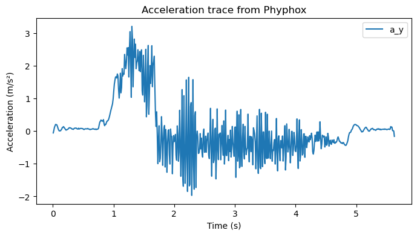

Helpful Code Note: Analyzing Phyphox Data in Python#
You will export your trial from Phyphox as “Raw Data.csv”. The file is tab-separated and the first line is a header (column names):
time (s) [tab] ax [tab] ay [tab] az [tab] |a|
The script below automatically extracts the header and selects the y-axis column (assuming that axis was aligned with motion).
If your phone was oriented differently, you can adjust the axis by searching for "x" or "z" instead.
Step 1. Import the data#
import pandas as pd
import numpy as np
import matplotlib.pyplot as plt
filename = "Raw Data.csv"
df = pd.read_csv(filename, sep="\t") # tab-separated file with header
print("Columns in file:", df.columns.tolist())
Step 2. Select time and axis of motion#
time = df[df.columns[0]].values # first column is time
a_y = df[[c for c in df.columns if "y" in c.lower()][0]].values
(Tip: Change "y" to "x" or "z" if you used a different axis for motion.)
Step 3. Plot to see the coast phase#
plt.figure(figsize=(8,4))
plt.plot(time, a_y, label="a_y")
plt.xlabel("Time (s)")
plt.ylabel("Acceleration (m/s²)")
plt.title("Acceleration trace from Phyphox")
plt.legend()
plt.show()
Look for:
A sharp spike (the push)
A flatter region afterward (the coast phase)
Step 4. Average over the coast interval#
t_start, t_end = 1.0, 1.5 # adjust after inspecting your plot
mask = (time >= t_start) & (time <= t_end)
coast_segment = a_y[mask]
a_mean = np.mean(coast_segment)
a_std = np.std(coast_segment, ddof=1)
print(f"Trial result: a = {a_mean:.3f} ± {a_std:.3f} m/s² (within-trial noise)")
Step 5. Convert to coefficient of friction#
g = 9.81
mu = -a_mean / g # negative since a ≈ -μ g
print(f"Estimated μ_k = {mu:.3f}")
Step 6. Across trials#
Repeat the above for each exported trial. Collect all trial means a_i into a list called a_vals. Then compute statistics across trials:
a_vals = np.array([a_trial1, a_trial2, a_trial3, ...])
bar_a = np.mean(a_vals)
s_a = np.std(a_vals, ddof=1)
s_a_bar = s_a / np.sqrt(len(a_vals))
mu_k = -bar_a / g
u_mu = s_a_bar / g
print(f"Final result: μ_k = {mu_k:.3f} ± {u_mu:.3f}")
Important Note#
The within-trial standard deviation (
a_std) shows short-term sensor noise.The across-trial standard deviation (
s_a) reflects experimental variation (push differences, surface irregularities) and is the correct uncertainty to report forμ_k.
Sample Code#
Below is a sample code reading in the data file Raw Data.csv, using the y-axis accelerometer, and chosing a coasting interval from 2-4 seconds based on the graph. These values can be adjusted to suit your experiment upon inspection of the graph. NOTE: This script does not include Step 6. You will need to repeat this a minimum of 6 times, then perform Step 6.
import pandas as pd
import numpy as np
import matplotlib.pyplot as plt
# --- 1. Import data with automatic header detection ---
filename = "Raw Data.csv"
df = pd.read_csv(filename, sep="\t") # Phyphox export is tab-separated with header in first line
# Print column names so you can see exactly what Phyphox produced
print("Columns in file:", df.columns.tolist())
# --- 2. Extract time and the chosen axis ---
# In this example we assume the y-axis is aligned with motion
time = df[df.columns[0]].values # first column should be time
a_y = df[[c for c in df.columns if "y" in c.lower()][0]].values # auto-detect y-axis column
# --- 3. Plot acceleration vs. time ---
plt.figure(figsize=(8,4))
plt.plot(time, a_y, label="a_y")
plt.xlabel("Time (s)")
plt.ylabel("Acceleration (m/s²)")
plt.title("Acceleration trace from Phyphox")
plt.legend()
plt.show()
# --- 4. Select a coast interval manually (after inspecting the plot) --- then find mean and sample standard deviation
t_start, t_end = 2.0, 4.0 # <-- adjust for your own data
mask = (time >= t_start) & (time <= t_end)
coast_segment = a_y[mask]
a_mean = np.mean(coast_segment)
a_std = np.std(coast_segment, ddof=1) # within-trial noise
print(f"Trial result: a = {a_mean:.3f} ± {a_std:.3f} m/s²")
# --- 5. Convert to coefficient of friction ---
g = 9.81
mu = -a_mean / g
print(f"Estimated μ_k = {mu:.3f}")
Columns in file: ['Time (s)', 'Linear Acceleration x (m/s^2)', 'Linear Acceleration y (m/s^2)', 'Linear Acceleration z (m/s^2)', 'Absolute acceleration (m/s^2)']

Trial result: a = -0.398 ± 0.632 m/s²
Estimated μ_k = 0.041